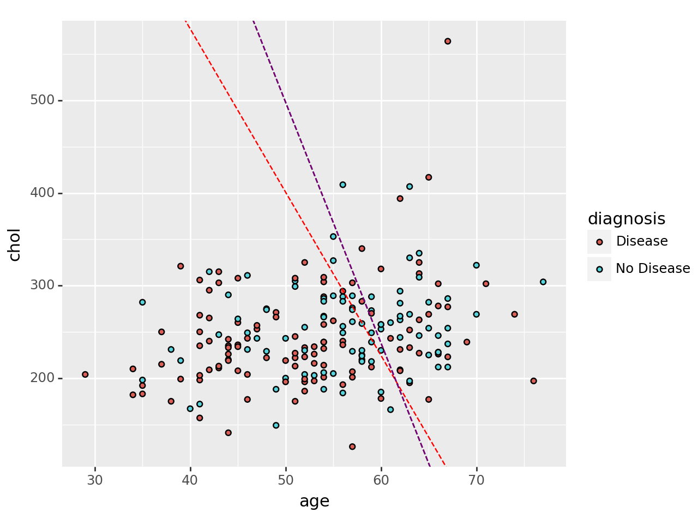

import numpy as np
import pandas as pd
from sklearn.pipeline import Pipeline
from sklearn.compose import make_column_selector, ColumnTransformer
from sklearn.preprocessing import StandardScaler, OneHotEncoder, PolynomialFeatures
from sklearn.linear_model import LinearRegression, Ridge, Lasso, ElasticNet
from sklearn.model_selection import train_test_split, cross_val_score
from sklearn.metrics import r2_score
from sklearn.model_selection import GridSearchCV
import pandas as pd
from sklearn.pipeline import Pipeline
from sklearn.neighbors import KNeighborsRegressor
from sklearn.tree import DecisionTreeRegressor
from sklearn.discriminant_analysis import LinearDiscriminantAnalysisThe Data
At this link, you will find a dataset containing information about heart disease patients: https://www.dropbox.com/scl/fi/0vrpdnq5asmeulc4gd50y/ha_1.csv?rlkey=ciisalceotl77ffqhqe3kujzv&dl=1
A description of the original dataset can be found here: https://archive.ics.uci.edu/dataset/45/heart+disease (However, this dataset has been cleaned and reduced, and the people have been given fictious names.)
1. Logistic Regression
Fit a Logistic Regression using only age and chol (cholesterol) as predictors.
For a 55 year old, how high would their cholesterol need to be for the doctors to predict heart disease is present?
How high for the doctors to estimate a 90% chance that heart disease is present?
from sklearn.linear_model import LogisticRegressionmyData = pd.read_csv('https://www.dropbox.com/scl/fi/0vrpdnq5asmeulc4gd50y/ha_1.csv?rlkey=ciisalceotl77ffqhqe3kujzv&dl=1')x = myData[['age','chol']]
y = myData['diagnosis']logistic_regression_pipeline_1 = Pipeline(
[
("logistic", LogisticRegression())]
)fitted_log = logistic_regression_pipeline_1.fit(x,y)
fitted_log.named_steps['logistic'].coef_array([[0.04686331, 0.00180124]])fitted_log.named_steps['logistic'].intercept_array([-3.24011226])(np.log(.9/.1)-fitted_log.named_steps['logistic'].intercept_[0]-fitted_log.named_steps['logistic'].coef_[0][0]*55)/fitted_log.named_steps['logistic'].coef_[0][1]1587.71587927509952. Linear Discriminant Analysis
Fit an LDA model using only age and chol (cholesterol) as predictors.
For a 55 year old, how high would their cholesterol need to be for the doctors to predict heart disease is present?
lda_1 = Pipeline(
[
("linear_dis", LinearDiscriminantAnalysis())]
)fitted_lda = lda_1.fit(x,y)
fitted_lda.named_steps['linear_dis'].coef_array([[0.04655744, 0.00178967]])fitted_log.named_steps['logistic'].intercept_array([-3.24011226])(-fitted_lda.named_steps['linear_dis'].intercept_[0]-fitted_lda.named_steps['linear_dis'].coef_[0][0]*55)/fitted_lda.named_steps['linear_dis'].coef_[0][1]368.2353575299383. Support Vector Classifier
Fit an SVC model using only age and chol as predictors. Don’t forget to tune the regularization parameter.
For a 55 year old, how high would their cholesterol need to be for the doctors to predict heart disease is present?
from sklearn.svm import SVCSVClassifier = Pipeline([
("support_vector_classifier", SVC())
])
degrees = {'support_vector_classifier__C': [0.1, 0.2, 0.3, 0.4, 0.5, 0.6, 0.7, 0.8]}
gscv = GridSearchCV(SVClassifier, degrees, cv=5, scoring='roc_auc')
gscv_fitted = gscv.fit(x, y)
result_df = pd.DataFrame(data={'SVC_tune': [0.1, 0.2, 0.3, 0.4, 0.5, 0.6, 0.7, 0.8], "scores": gscv_fitted.cv_results_['mean_test_score']})
max_index = result_df['scores'].idxmax()
row_with_max_value = result_df.loc[max_index]
print(row_with_max_value)SVC_tune 0.500000
scores 0.606877
Name: 4, dtype: float64SVClassifier_tuned = Pipeline([
("support_vector_classifier", SVC(C=0.5, kernel='linear'))
])
fitted_svc = SVClassifier_tuned.fit(x,y)coefficients = fitted_svc.named_steps['support_vector_classifier'].coef_
coefficientsarray([[0.06442719, 0.00365048]])(-fitted_svc.named_steps['support_vector_classifier'].intercept_[0]-fitted_svc.named_steps['support_vector_classifier'].coef_[0][0]*55)/fitted_svc.named_steps['support_vector_classifier'].coef_[0][1]312.71631575581054. Comparing Decision Boundaries
Make a scatterplot of age and chol, coloring the points by their true disease outcome. Add a line to the plot representing the linear separator (aka decision boundary) for each of the three models above.
from plotnine import ggplot, aes, geom_point, geom_ablinescatter_plot = (
ggplot() +
aes(x=myData['age'], y=myData['chol'], fill=myData['diagnosis']) +
geom_point() +
geom_abline(
intercept=-fitted_svc.named_steps['support_vector_classifier'].intercept_ / fitted_svc.named_steps['support_vector_classifier'].coef_[0][1],
slope=-fitted_svc.named_steps['support_vector_classifier'].coef_[0][0] / fitted_svc.named_steps['support_vector_classifier'].coef_[0][1],
color='red', linetype='dashed'
) +
geom_abline(
intercept=-fitted_log.named_steps['logistic'].intercept_/ fitted_log.named_steps['logistic'].coef_[0][1],
slope=-fitted_log.named_steps['logistic'].coef_[0][0] / fitted_log.named_steps['logistic'].coef_[0][1],
color='black', linetype='dashed'
) +
geom_abline(
intercept=-fitted_lda.named_steps['linear_dis'].intercept_ / fitted_lda.named_steps['linear_dis'].coef_[0][1],
slope=-fitted_lda.named_steps['linear_dis'].coef_[0][0] / fitted_lda.named_steps['linear_dis'].coef_[0][1],
color='purple', linetype='dashed'
)
)
print(scatter_plot)